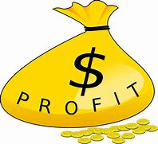
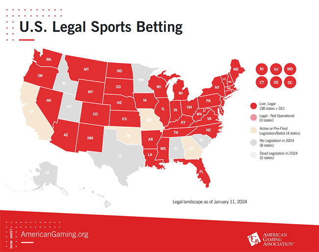

ChattPicks Bets
Bet #1 NRFI White Sox vs Royals - Risk 1 Unit at -122
NRFI stands for No Run First Inning. Last season the White Sox had a 121-41(75%) overall NRFI record and the Royals had a 120-45(73%) NRFI. I'll take my chances and root for 6 easy outs to start the game.
Bet #2 Hit Parlay - Bryan De La Cruz + Bobby Witt Jr - Risk 1 Unit at Odds TBD
Bryan De La Cruz has had a hit in all 7 games so far this season. Bobby Witt Jr. has gotten a hit in 5 out of 6 games with all 5 being over 1.5 total bases. I feel like both of them get a hit. Might even take Bobby Witt Jr over 1.5 bases seperately also.
Bet #3 Cleveland Guardian F5 +1.5 / Under 4.5 - Risk 1 Unit at -105
Both Pablo Lopez and Tyler Bibee are both decent pitchers. I was wanting to take F5 under 4.5 but it was -160 on Draftkings so I went to Fanduel and found this F5 Run Line + F5 Total Runs. I love this bet! And I get it for pretty much even money.
Chattanooga Picks Infomation
I will do my best to post my picks daily. It may be NBA, NFL, or MLB. Maybe even a combination of the three. I am just trying to find what I think has the most value and has a high percentage of hitting. You don't have to tail me. Just giving out what I think has the best chance to make me profitable at the end of the day. As a sports bettor, that is all I can ask for. May the sport gods forever be in our favor!

ChattPicks Bets
Legalization of Sports Betting
More and More states are legalizing sports betting. Which is opening the door for Sport Handicappers to start making podcast videos or joining websites to get their bets out. ESPN and other networks have created TV shows surrounding betting on sports. There are Billions of Dollars to be made in the world of sports. Sports gambling is growing more popular by the day.

Wins vs Losses
Full transparency here! If I am wrong, then I am wrong. I won't try to hide it. I try to look at the long run. Am I profitable this week? or this month? As a sport gambler you have to have a short memory. If someone screwed you last time ask yourself, "What is the odds of him not hitting two games in a row?" Using this philosophy and researching statisics I try to come up with what I think has the best percentage to hit.
Win vs Losses